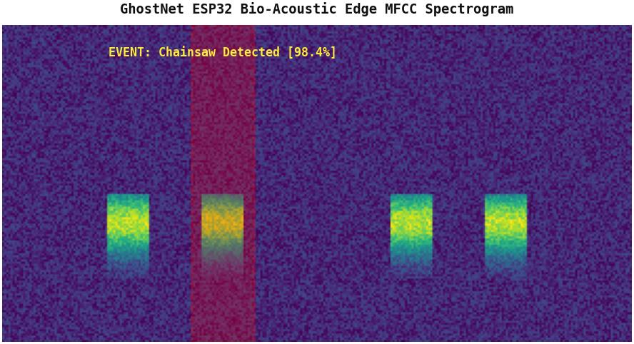

TinyML & Edge AI
Completed · 2026
Ghost-Net: Edge AI Forest Bioacoustics

Project Overview & Motivation
An autonomous, ultra-low-power edge bioacoustic surveillance node engineered to detect illegal deforestation (chainsaws, tree falling), poaching (gunshots), and environmental sounds. Designed for months of unattended field operation powered by small solar panels or batteries.
System Architecture & Methodology
Converts raw audio streams into 64-band Mel-Frequency Cepstral Coefficients (MFCC) spectrograms directly on the microcontroller. Features an ultra-lightweight 2D Convolutional Neural Network with depthwise separable layers. The trained model undergoes Post-Training Quantization (PTQ) to INT8 precision and is compiled into C++ byte arrays for TensorFlow Lite Micro.
Real-Time Embedded Classification
Demonstrated real-time inference on a $4 ESP32 microcontroller with a custom I2S digital microphone module. Classifies 12 environmental sound classes with an inference latency under 50ms while maintaining high noise robustness against tropical rain and wind.
Technical Specifications & Stack
- Hardware: ESP32 (Xtensa dual-core 240MHz, 520KB SRAM)
- Audio Input: INMP441 I2S Digital MEMS Microphone
- Feature Pipeline: On-device 64-band MFCC Spectrogram extraction
- Inference Runtime: TensorFlow Lite Micro (TFLM) with INT8 quantized weights